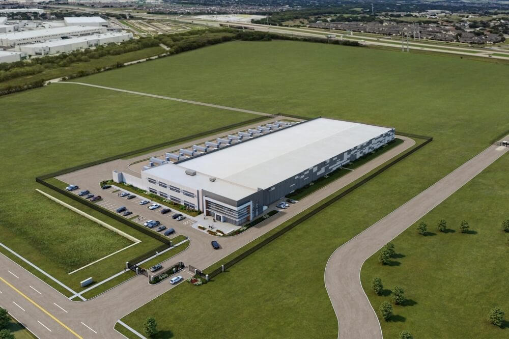

The Claim That Went Viral
A widely shared post declared that “yet another CEO moved his entire company from California to Texas” because “doing business in California sucks,” listing taxes, regulation, crime, and cost of living. The inset photo and the Newsom reaction shot did the rest of the work.
The core event is real. The framing needs context.
Who
Hil Davis (John Hilburn Davis IV), CEO and Chairman of Digital Brands Group, Inc. (NASDAQ: DBGI). Former founder of J. Hilburn and BeautyKind.
What Moved
Corporate headquarters and expanded warehouse/office space. Some production operations remain in the Los Angeles area.
From → To
Vernon, California (industrial city south of LA, address historically 4700 S. Boyle Ave) → Round Rock, Texas (EastGroup industrial park, 350 Texas Avenue area, north of Austin).
Scale
Roughly 33 full-time employees reported. Public micro-cap company with recent reverse split, elevated losses, and going-concern language in filings. Not a Fortune 500 exit.
What Davis Actually Said
“Doing business in the state of California sucks.”
He told Fox News Digital the new Round Rock facility costs roughly the same as the previous Vernon space yet delivers substantially more square footage (approximately 70,000 sq ft versus the prior ~45,000 range). Rent was only part of the equation.
Davis specifically cited:
- High cost of living
- Long employee commutes
- Rising cost of doing business, including money spent defending against lawsuits
- Overall operating friction that “doesn’t work… doesn’t make sense… it’s too hard”
He expects a “constant leak” rather than a sudden stampede. The company keeps some production in Los Angeles because apparel manufacturing and creative talent still cluster there. Round Rock offered faster permitting, a more central shipping location for nationwide collegiate apparel, and access to the Austin workforce.
Company Reality Check
Digital Brands Group is a small, publicly traded apparel and e-commerce platform that has been pivoting hard into collegiate licensed sports apparel (AVO and related lines), positioning against larger players such as Fanatics. SEC filings and company releases show aggressive guidance for revenue growth tied to university partnerships and NIL-related programs, alongside ongoing losses, debt, and financing activity (ATM offerings, convertible notes, reverse stock split in July 2026).
The headquarters move was first announced by the Round Rock Chamber in January/February 2026. The blunt August interview simply made the rationale public and quotable.
This is not Tesla, Chevron, or Charles Schwab relocating thousands of jobs. It is a micro-cap CEO concluding that the math no longer worked in Vernon and choosing Texas for the next growth phase.

The Larger Pattern (With Nuance)
California continues to lose net domestic migrants and tax base. Latest widely cited IRS county-level data showed Los Angeles County with a net loss of roughly 17,500 tax filers and nearly $1.9 billion in adjusted gross income. Other Southern California counties also ranked high on outbound lists. Multiple trackers document corporate headquarters and expansions choosing Texas, Tennessee, Arizona, Nevada, and Florida for lower taxes, lower operating costs, and faster permitting.
At the same time, California still holds structural advantages that are difficult to replicate: Silicon Valley talent density and venture capital, Los Angeles creative and apparel manufacturing ecosystems, ports, research universities, and weather. Many companies keep substantial operations in-state even after moving a headquarters plaque. Davis himself acknowledged those “centers of gravity.”
Crime appears in many social-media versions of the story. Davis’s publicly reported comments focused more on cost of living, commutes, lawsuits, and general operating friction. Crime and quality-of-life concerns are real factors for many California businesses and residents; they were not the primary language he used in the coverage that circulated.
Tower District Lens
Fresno and the High Tower District live inside the same cost-of-living and regulatory environment. Small and mid-size operators here feel the same pressure on rent, labor, insurance, permitting timelines, and lawsuit exposure that Davis described. When a California CEO says the math stopped working, local shop owners, warehouse operators, and service businesses recognize the arithmetic even if the company size is different.
The High Tower District Facebook group exists in part because residents watch crime, safety, and neighborhood stability in real time. Business climate and street-level order are not separate conversations. Both affect whether people stay, invest, or leave.
Bottom Line
The story is true in its essentials. A California-based apparel CEO moved his headquarters to Texas, used strong language about the difficulty of operating in California, and cited cost of living, employee logistics, and legal/operating expenses. The company is small. Some production stays in LA. The move fits a multi-year pattern of net outbound migration of people and capital, while California retains genuine industry anchors that still draw talent and capital.
Viral posts compress the story into a morality play. The actual decision looks more like a spreadsheet that finally stopped balancing, followed by a CEO who was willing to say so out loud.
Sources
- Fox News Digital / Amanda Macias, August 17, 2026 — primary interview with Hil Davis
- Round Rock Chamber of Commerce announcement, January/February 2026
- Digital Brands Group SEC filings (10-Q, 10-K, exhibits) and company releases on revenue guidance, collegiate expansion, and financing
- IRS SOI migration data summaries cited in coverage of Los Angeles County and California net filer losses
- Austin Business Journal and local Round Rock reporting on the HQ relocation and growth plans
- Public company profile data (employee count, market activity)
This piece prioritizes verifiable details over the meme framing. Corrections welcome.